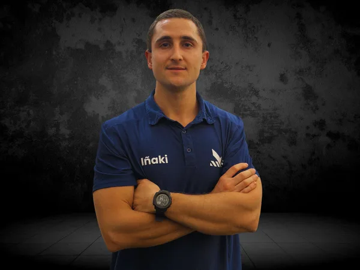
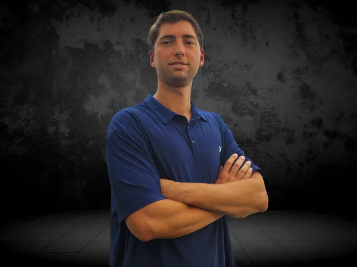
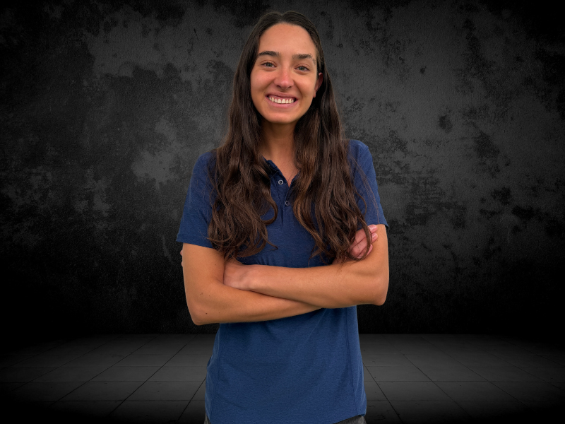
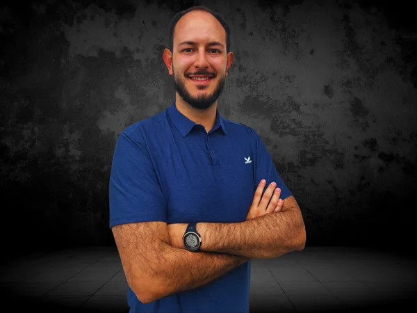
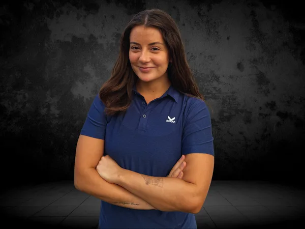

Profesionales que entienden el deporte
No somos un centro médico general. Somos un equipo de especialistas que comparten la misma pasión que tú: el deporte. Cada profesional tiene formación específica en salud deportiva y rendimiento.
El equipo Kalud

Iñaki Achondo
Quiropráctico Deportivo — Director de KaludIñaki es quiropráctico deportivo titulado con especialización en deporte y rendimiento. Fundador y director de Kalud, construyó el centro con la visión de crear un espacio donde los deportistas chilenos puedan acceder a atención clínica de elite integrada con entrenamiento y nutrición.
Con amplia experiencia en el manejo de patologías musculoesqueléticas en deportistas de distintos niveles, Iñaki combina técnicas de ajuste quiropráctico con evaluación funcional para abordar tanto el síntoma como su causa raíz.
Especialidades

Clemente Mewes
Kinesiólogo DeportivoKinesiólogo titulado con especialización en rehabilitación deportiva. Clemente trabaja con deportistas en recuperación de lesiones musculares, tendinosas y articulares, utilizando técnicas de fisioterapia moderna para acelerar el retorno al deporte.
Su enfoque pone especial énfasis en la fase de readaptación deportiva: no basta con que el tejido sane, el deportista debe volver con la capacidad funcional y confianza para rendir al máximo.
Especialidades

Luz Hortal
Nutricionista DeportivaNutricionista titulada con especialización en nutrición deportiva y rendimiento. Luz diseña planes de alimentación individualizados para deportistas de distintos niveles, integrando periodización nutricional, suplementación basada en evidencia y estrategias prácticas para la vida real.
Trabaja tanto con deportistas que buscan mejorar su composición corporal como con atletas competitivos que necesitan optimizar su energía disponible y recuperación.
Especialidades

Francisco Orellana
Kinesiólogo DeportivoKinesiólogo especializado en kinesiología deportiva y prevención de lesiones. Francisco trabaja con el análisis del movimiento para identificar desequilibrios y factores de riesgo antes de que se conviertan en lesiones, y en la rehabilitación de lesiones complejas del tren inferior.
Su práctica integra ejercicio terapéutico, electroestimulación y técnicas de fisioterapia moderna para acelerar la recuperación y devolver al deportista al campo con mayor resiliencia.
Especialidades

Catalina Guzmán
Kinesióloga DeportivaKinesióloga especializada en rehabilitación deportiva y tratamiento de lesiones musculoesqueléticas. Catalina trabaja con deportistas de distintos niveles en la recuperación de lesiones y el retorno seguro al deporte.
Su enfoque combina evaluación funcional detallada con técnicas de terapia manual y ejercicio terapéutico para lograr una recuperación completa y prevenir recaídas.
Especialidades
El enfoque Kalud
Evidencia científica
Cada tratamiento y recomendación está respaldada por investigación clínica actualizada. No trabajamos con técnicas sin base científica.
Trabajo en equipo
Nuestros especialistas se comunican entre sí para que tu plan de atención sea coherente y complementario, no fragmentado.
Orientación al rendimiento
El objetivo no es solo curar: es que vuelvas a rendir al máximo. Pensamos en el deportista, no solo en el paciente.